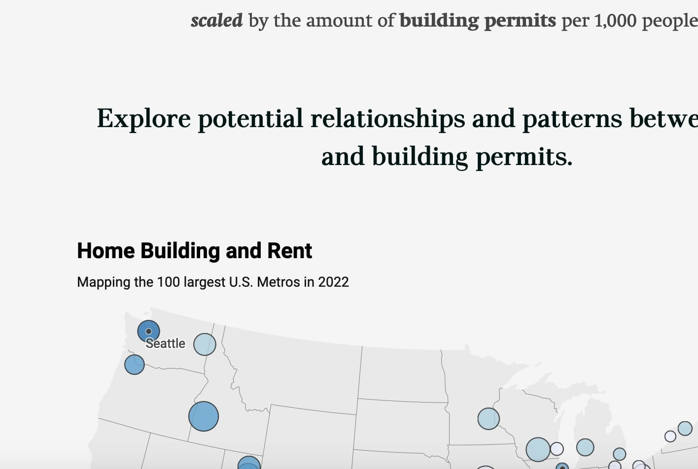
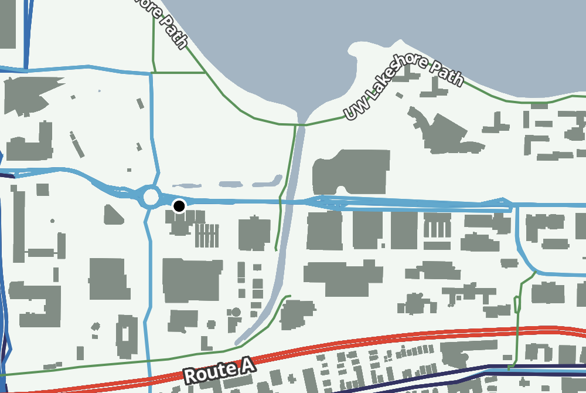

Visualizing the upcoming BRT system in Madison, WI as a subway-style map.
For Intro to Cart | Petchenik Award Winner
Campus Scavenger Hunt
This map was created for UW-Madison for a scavenger hunt for the 175th anniversary of UW.
For the UW Cartography Lab
This map was created for a UW-Madison Geography Graduate Student for her dissertation.
Displays mockups for projects as well as a comparison of present vs future bike infrastructure.
For Interactive Cart & Geovisualization
Custom basemap in the style of MF Doom cover art.
For Graphic Design in Cartography Course

Story map exploring housing (un)affordability in U.S. Metros.
Interactive Map to allow members of the public to discover places to cool off in the summer heat.
For the City of Columbia, MO
Rebuilt the City's CIP Dashboard to display taxpayer funded city projects.

Created custom vector tiles from scratch and without dependencies using PMTiles and MapLibre.
Interactive built for the Public Works Department to display street related information including speed limits, ownership, and road condition.


{kind=link}
{kind=link}
{kind=link}